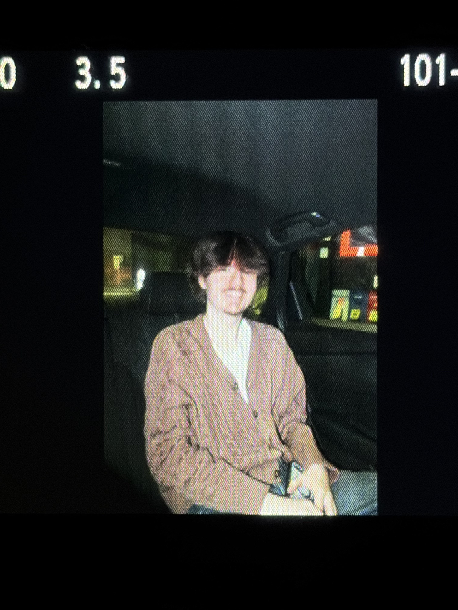

jacob cooper
Member since January 20, 2026 •
Biography
Jacob Cooper (stylized 'jacob cooper') is a multi-genre musician based in Boston, Massachusetts. They started creating music in 2018 and are best known for the project 'melancholia blue.'.
Since 2020, Jacob has built a prolific catalog, ranging from the "coldest summer in boston" series to multimedia albums like "Why are you watching?". They continue to release consistent projects, often accompanied by visual components and physical media.